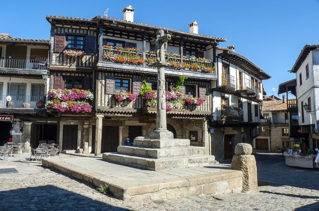

La Alberca, situada al sur de la provincia, es, sin duda, una de las poblaciones salmantinas más bonitas.
Se halla, a más de 1000 metros de altitud sobre el nivel del mar, en pleno valle de Batuecas, formando parte de la comarca de la Sierra de Francia.
Un paseo por sus calles nos traslada a otros tiempos, a otros mundos, perderse por sus rincones y plazuelas es tarea obligada y uno de los mayores placeres para los que buscan paisajes pintorescos, trazados imposibles de belleza singular, fachadas equilibristas y juegos de luces y sombras que alegran nuestra vista. El marrano de san Antón paseando por las calles nos anunciará que es lugar este de buen jamón y de repente el alma se nos encogerá al oír el tañido de la esquila que nos anuncia que es el momento de las ánimas. Tradiciones vivas que se viven ante nuestros ojos.
